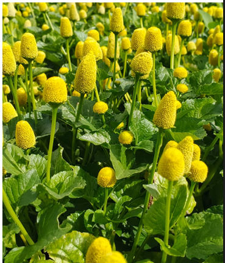
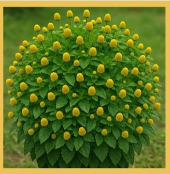
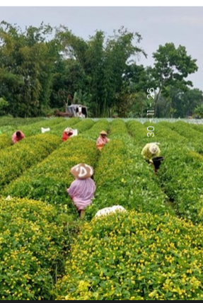
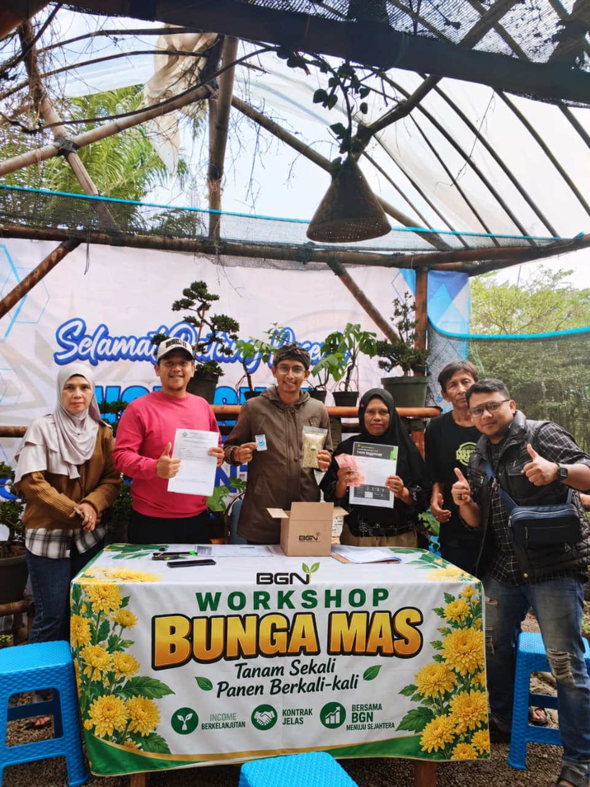

Budidaya Bunga Mas merupakan program pengembangan tanaman herbal yang berfokus pada peningkatan kualitas budidaya, pemberdayaan masyarakat, serta menciptakan peluang usaha yang berkelanjutan. Tanaman Spilanthes acmella dikenal memiliki berbagai manfaat untuk kesehatan sehingga memiliki nilai ekonomi yang tinggi.

Bunga Mas (Spilanthes acmella) merupakan salah satu tanaman herbal bernilai tinggi yang telah lama dikenal sebagai tanaman obat tradisional. Selain memiliki berbagai manfaat kesehatan, tanaman ini juga mempunyai potensi ekonomi yang besar karena banyak dimanfaatkan sebagai bahan baku produk herbal, farmasi, kosmetik, hingga pengobatan alami.
Melalui program Budidaya Bunga Mas, kami berkomitmen mengembangkan pertanian herbal modern dengan mengutamakan kualitas bibit, pendampingan petani, serta pengembangan usaha berbasis kemitraan. Kami percaya bahwa pertanian tidak hanya menghasilkan panen, tetapi juga mampu meningkatkan kesejahteraan masyarakat melalui inovasi dan kerja sama.
Konsultasi SekarangKami menghadirkan solusi budidaya tanaman herbal yang berkualitas, berkelanjutan, dan menguntungkan.
Bibit unggul yang dipilih melalui proses seleksi untuk menghasilkan tanaman yang sehat dan produktif.
Pendampingan budidaya mulai dari penanaman, perawatan, hingga panen.
Permintaan tanaman herbal terus meningkat sehingga memiliki nilai ekonomi yang menjanjikan.
Menggunakan metode budidaya yang aman, berkelanjutan, dan menjaga kelestarian alam.
Bunga Mas (Spilanthes acmella) merupakan tanaman herbal tropis yang berasal dari kawasan Amerika Selatan, khususnya wilayah Brazil bagian tropis. Tanaman ini telah dikenal sejak lama sebagai tanaman obat tradisional karena mengandung senyawa alami yang bermanfaat untuk kesehatan.
Karena mudah tumbuh pada daerah beriklim tropis, Bunga Mas kemudian menyebar ke berbagai negara dan menjadi salah satu tanaman herbal yang banyak dibudidayakan.

Merupakan daerah asal Bunga Mas, terutama wilayah Brazil bagian tropis.
Menyebar ke India, Thailand, Laos, Vietnam, hingga Indonesia.
Tumbuh baik pada dataran rendah hingga dataran sedang dan telah lama dimanfaatkan masyarakat.

Di Indonesia, Bunga Mas telah lama tumbuh liar maupun dibudidayakan oleh masyarakat. Tanaman ini berkembang sangat baik pada wilayah tropis, khususnya dataran rendah hingga dataran sedang.
Selain dimanfaatkan sebagai tanaman obat keluarga, Bunga Mas kini mulai dikembangkan menjadi komoditas pertanian herbal yang memiliki nilai ekonomi tinggi. Melalui budidaya yang baik, tanaman ini berpotensi menjadi sumber pendapatan baru bagi petani dan pelaku UMKM.
Bunga Mas telah digunakan secara turun-temurun sebagai tanaman herbal yang memiliki berbagai manfaat bagi kesehatan.
Membantu meredakan sariawan secara alami.
Dikenal sebagai Toothache Plant karena membantu mengurangi nyeri gigi.
Memiliki sifat antiseptik alami.
Membantu mengurangi peradangan.
Membantu menjaga daya tahan tubuh.
Membantu memberikan stimulasi saraf dan meningkatkan gairah tubuh.
Tanaman Herbal
Manfaat Utama
Negara Penyebaran Asia
Peluang Pengembangan
Budidaya dilakukan melalui tahapan yang sederhana namun memerlukan ketelitian agar menghasilkan tanaman yang sehat, berkualitas, dan memiliki nilai jual tinggi.
Pilih bibit Bunga Mas yang sehat, segar, dan bebas dari hama maupun penyakit agar pertumbuhan tanaman optimal.
Tanam pada media tanam yang gembur, subur, dan memiliki sistem drainase yang baik agar akar berkembang sempurna.
Lakukan penyiraman, pemupukan, dan pengendalian gulma secara rutin untuk menjaga kualitas tanaman.
Panen dilakukan ketika tanaman telah mencapai umur yang sesuai agar kandungan senyawa aktifnya tetap optimal.

Kami membuka kesempatan bagi masyarakat, petani, UMKM, maupun pelaku usaha yang ingin mengembangkan budidaya Bunga Mas melalui program kemitraan yang saling menguntungkan.
Harga Bunga Mas memiliki nilai ekonomi yang menjanjikan dan didukung oleh pasar yang terus berkembang.
Harga Bunga Mas relatif stabil karena kebutuhan pasar terus meningkat, terutama sebagai bahan baku jamu herbal, produk kesehatan, dan kosmetik.
Pasar domestik maupun ekspor mulai berkembang, dengan permintaan dari industri herbal, pabrikan jamu, produsen suplemen, hingga industri skincare.
| Produk | Harga |
|---|---|
| Bunga Mas Basah | Rp 5.000/kg |
| Bunga Mas Kering | Rp 35.000/kg |
Bunga basah dipanen dan langsung dijual kepada pengumpul atau mitra.
Bunga kering diperoleh setelah proses penjemuran selama sekitar 2–3 hari dengan penyusutan bobot sekitar 85%.
Perbandingan:
6 kg bunga basah ≈ 1 kg bunga kering.
Tersedia program kemitraan bersama PT. AGRO HIJAU DAUN sebagai offtaker (pembeli tetap) yang siap menyerap hasil panen petani.
Melalui pola kemitraan ini, petani memperoleh kepastian pasar sehingga hasil panen dapat terserap dengan harga yang baik dan berkelanjutan.
Konsultasi KemitraanBerikut merupakan simulasi estimasi pendapatan budidaya Bunga Mas berdasarkan pola panen dan harga kontrak yang berlaku.
Produksi : 20 kg × 3 kali panen × Rp35.000
Produksi : 30 kg × 3 kali panen × Rp35.000
Produksi : 50 kg × 3 kali panen × Rp35.000
Perhitungan berikut merupakan simulasi laba bersih berdasarkan estimasi hasil panen selama 10 bulan dengan modal budidaya sebesar Rp4.750.000.
| Kategori | Total Panen 10 Bulan | Modal Budidaya | Laba Bersih |
|---|---|---|---|
| Rendah | Rp21.000.000 | Rp4.750.000 | Rp16.250.000 |
| Sedang | Rp31.500.000 | Rp4.750.000 | Rp26.750.000 |
| Tinggi | Rp52.250.000 | Rp4.750.000 | Rp47.500.000 |
Budidaya Bunga Mas memiliki potensi keuntungan yang menjanjikan. Dengan pola panen yang teratur, harga kontrak sebesar Rp35.000/kg, serta dukungan kemitraan melalui perusahaan offtaker, petani memiliki peluang memperoleh laba bersih mulai dari Rp16.250.000 hingga Rp47.500.000 dalam satu periode budidaya selama 10 bulan.
Dokumentasi proses budidaya mulai dari penanaman hingga panen.
Hubungi kami sekarang untuk mendapatkan informasi mengenai budidaya, kemitraan, maupun pemesanan bibit Bunga Mas.
Pesan SekarangKantor PT. Berniaga Gemilang Nusantara, Komplek Fikom, Jl. Villa Bandung Indah Bl. A No.5, RT.005/RW.011, Cileunyi Wetan, Kec. Cileunyi, Kabupaten Bandung, Jawa Barat 40622
Restu Satrio
+6281224001548
restu7satrio@gmail.com